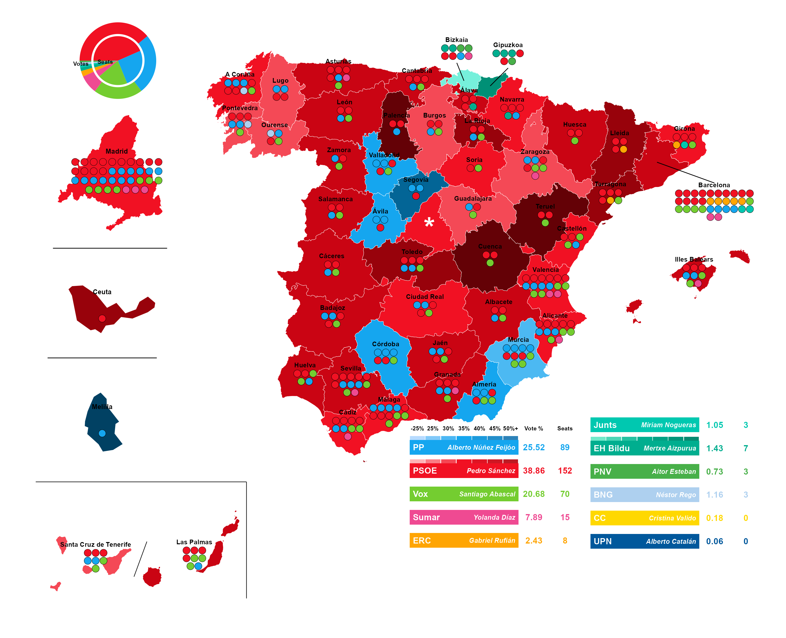
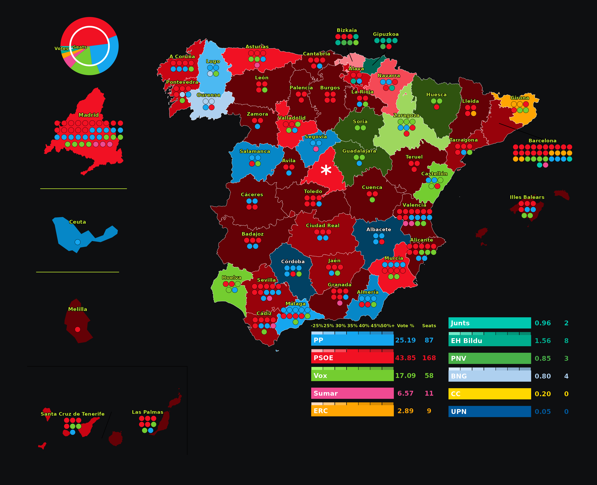
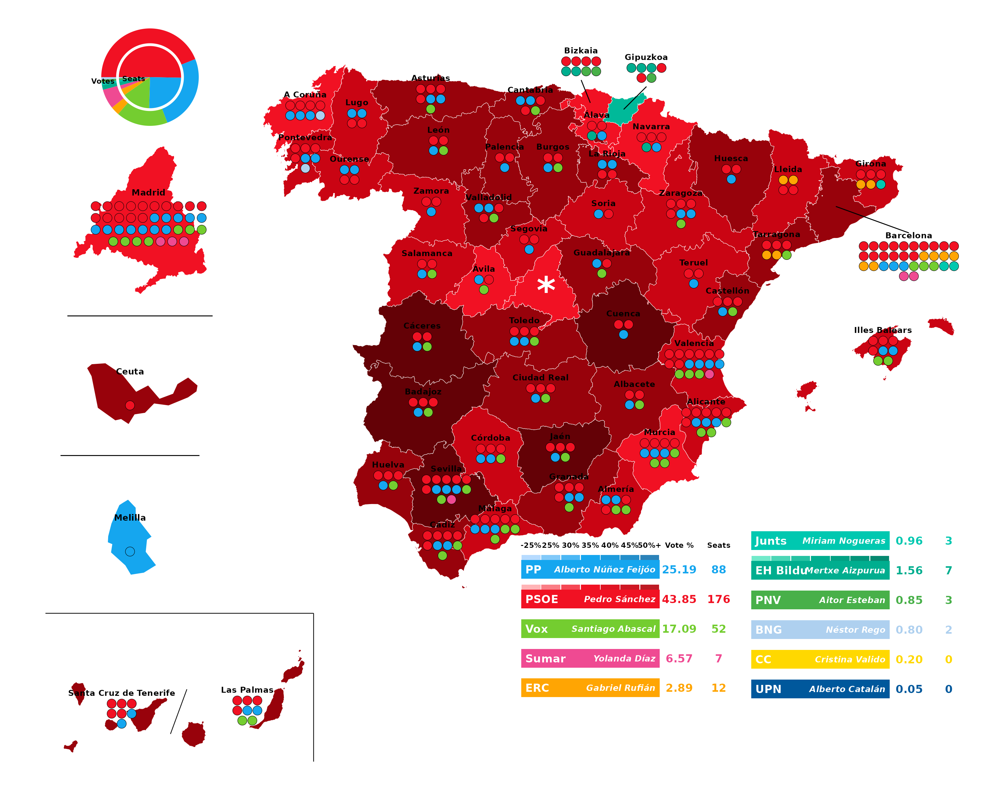
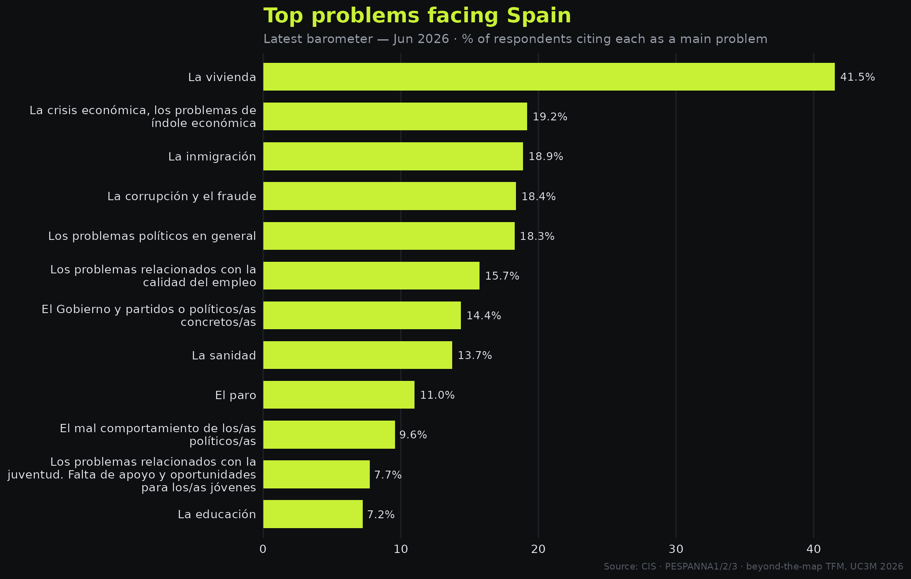
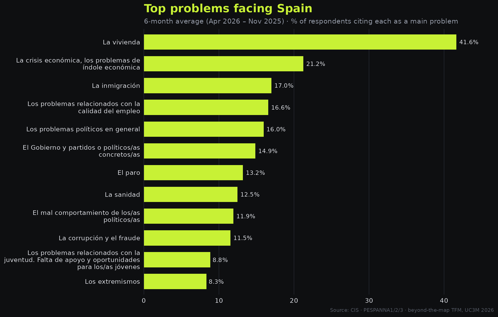
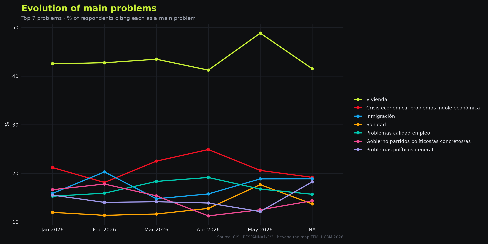
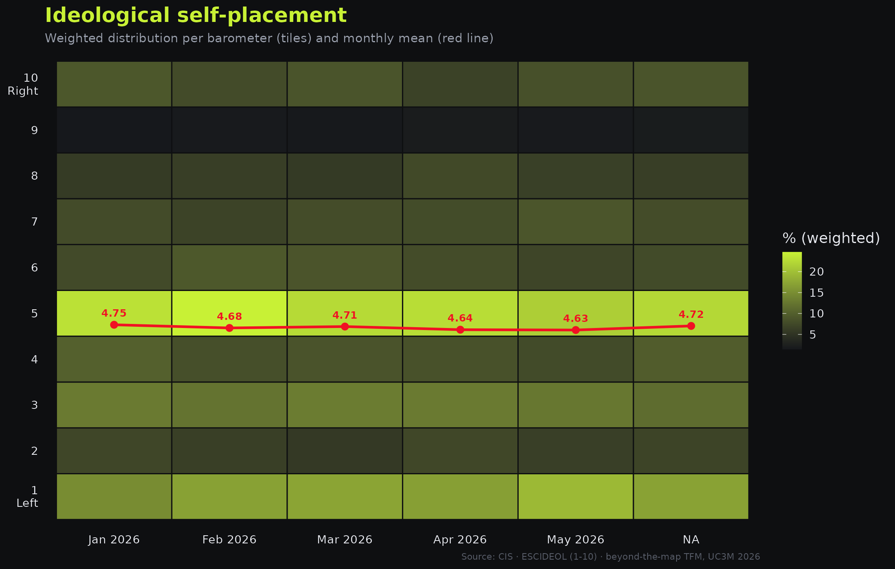

Electoral projection
Provincial seat allocation projected from the six most recent CIS monthly barometers under the D'Hondt method. Vote intentions are aggregated across barometers using the survey-calibrated weights (PESO), then allocated to seats by province following Spain's current electoral law. Updated automatically each month. There are three measures, each answering a slightly different question:

6-month aggregate · Source: CIS · CC BY 4.0 · D'Hondt · beyond-the-map TFM, UC3M 2026

Latest barometer only · Source: CIS · CC BY 4.0 · D'Hondt · beyond-the-map TFM, UC3M 2026

UNS swing-adjusted · Butler & Stokes (1969) · Source: CIS · beyond-the-map TFM, UC3M 2026
Public opinion
What do Spaniards consider the most pressing problems facing the country? Rankings based on the three main problems cited by each respondent (PESPANNA1/2/3), weighted by the survey calibration weight (PESO).

Latest barometer · Source: CIS · PESPANNA1/2/3 · beyond-the-map TFM, UC3M 2026

6-month average · Source: CIS · PESPANNA1/2/3 · beyond-the-map TFM, UC3M 2026

Top 7 problems over 6 months · Source: CIS · PESPANNA1/2/3 · beyond-the-map TFM, UC3M 2026
Self-placement
Monthly tracking of ideological self-placement (ESCIDEOL, 1–10 scale) from the CIS barometers. The heatmap shows the weighted distribution across the left–right scale; the red line tracks the weighted monthly mean.

ESCIDEOL (1–10) · Source: CIS · beyond-the-map TFM, UC3M 2026